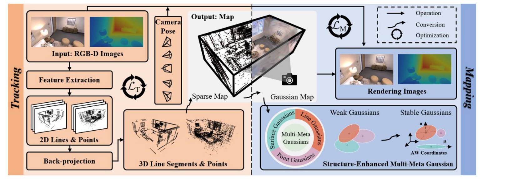
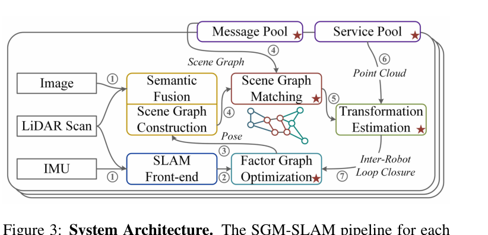

Executive Summary
本期真正值得沉淀的主线是结构化约束正在重新进入神经/3DGS SLAM。MMD-SLAM 不是简单把 3DGS 放进 SLAM，而是用 Atlanta World 结构先验把 Gaussian 分成 point/line/surface 三类，并把 point-line tracking、Multi-Meta Gaussian evolution、shape/direction loss 接到同一套 tracking-mapping 管线里。这个方向的启发是：高保真地图如果缺少几何结构约束，渲染好看但边界、平面和可用性会不稳。
分布式 SLAM 的瓶颈仍是跨机器人数据关联与通信预算。SGM-SLAM 用 scene graph matching，只交换 object id/type/centroid 等轻量对象数据，满足条件后再请求稀疏 object point cloud 与关键帧信息。它的价值不在“语义地图更漂亮”，而在低重叠、多机器人、低带宽场景下把 inter-robot loop closure 的候选发现压缩到对象层。
工程代码侧，最值得跟进的是 MVOFormer 与 MoonSplat。MVOFormer 已开源模型代码、配置、SeaRAFT 光流模块、DINOv3 语义分支和 deformable attention CUDA ops；MoonSplat 已有可运行入口、配置、mapping/tracking 模块和 3D Gaussian rasterization submodule。两者都还需要重依赖和数据准备，不能从 README 直接推断“本机可一键复现”。
Feed-forward 3D 与世界模型方向继续热，但本期证据边界要收紧。Hand-4DGS、FR3D、PAIWorld、world-action model 一类工作很多，但大多与 SLAM/VIO/SfM 主链路关系间接。本报告只把 Hand-4DGS、FR3D 等作为补充跟踪，不把摘要改写成 SLAM 工程结论。
Deep-read Papers
| 论文 | 系统/框架图 | 解决的问题 | 方法 / 结构 | Insight 与数学知识 | 实验与效果 | 复现与启发 | 阅读证据 |
|---|---|---|---|---|---|---|---|
|
MMD-SLAM: Structure-Enhanced Multi-Meta Gaussian Distribution-Guided Visual SLAM 3DGS SLAMRGB-DAtlanta World |
 Fig.2 Overview，视觉确认：tracking 与 mapping 两部分完整。 |
现有 3DGS-based visual SLAM 多强调渲染质量或效率，但对室内结构线、平面、主方向利用不足，导致边界模糊、地图不一致或结构恢复不稳。 | Tracking 侧从 RGB-D 提取 2D line/point，利用 depth 做 3D back-projection，以 reprojection/back-projection error 做 point-line 融合位姿优化；Mapping 侧按 AW 假设把 Gaussian 分为 point/line/surface，并用 Weak/Stable 状态、clone/split/merge 与结构增强 loss 迭代更新。 | 关键数学包括 SE(3) 位姿、针孔投影/反投影、线段到投影线距离、Gaussian covariance/alpha blending、shape ratio 与 direction loss。核心 insight 是把结构先验放进 Gaussian primitive 的类型和损失，而不是只在 tracking 前端加线特征。 |
|
未找到公开代码仓库，复现暂时只能从论文公式与实验设置推断。对 SLAM/3D 工程的启发是：3DGS 地图若服务机器人，不应只优化颜色/深度，还要把线、面、主方向这类可解释结构纳入 primitive 设计。 | 全文 PDF 已落盘并抽文本；阅读 Abstract、Intro、Related Work、Method、Experiment、Ablation Table III、Conclusion；系统图 Fig.2 已视觉确认并裁剪。 |
|
SGM-SLAM: Scene Graph Matching for Data-Efficient Distributed SLAM distributed SLAMscene graphmulti-robot |
 Fig.3 System Architecture，视觉确认：红星标出跨机器人模块。 |
多机器人 SLAM 的 inter-robot data association 受低重叠、视角变化和带宽限制影响。传统描述子或直接点云交换要么依赖较大视角重叠，要么通信成本高。 | 每个机器人用 LiDAR、RGB camera、IMU 构建本地 scene graph：keyframe layer、object layer、semantic point cloud layer。跨机器人先交换 object ID/type/centroid，做 object-level graph matching；有足够匹配后再请求稀疏 object point cloud、关键帧与协方差，用 ICP refine 后写回 SLAM factor graph。 | 关键数学包括 factor graph/PGO、object graph 的 QAP 松弛、Hungarian/LAP、3 点以上非共线 object centroid 的刚体变换估计、ICP refinement。核心 insight 是把“通信频率高的数据”从点云/图像描述子降到对象级几何语义摘要。 |
|
未找到公开代码仓库。对机器人系统的启发是：分布式 loop closure 不一定先追求更强视觉/点云描述子，也可以先让地图结构变成可通信的对象图；但它依赖稳定 object extraction，且低 overlap 是明确脆弱点。 | 全文 PDF 已落盘并抽文本；阅读 Abstract、Intro、Problem Formulation、Algorithm、Experiments、Communication Analysis、Conclusion；系统图 Fig.3 已视觉确认并裁剪。 |
{kind=link}
{kind=link}
Repo Deep Dives
| Repo | 目标与能力 | 代码结构证据 | 依赖 / 硬件 | 成熟度判断 | 领域关系 |
|---|---|---|---|---|---|
| Sun-Shun/MVOFormer stars 4 / forks 0 / updated 2026-06-16 |
RA-L 接收论文 MVOFormer 的开源实现，目标是把 dense optical flow 与 object-centric semantic prior 融合到 monocular visual odometry，强调 zero-shot 跨数据集泛化。 | GitHub API tree 显示 `Configs/MVOFormer.yaml`、`Network/Model/model.py`、`Network/Model/dinov3_module.py`、`Network/SeaRAFT/`、`Network/Deformable_ops/`、`Tool/Train_Test` 等；`model.py` 中有 DINOv3、backbone、fp_transformer 与 pose head；配置含 TartanAir/KITTI/TUM/ETH3D/EuRoC 测试项。 | README 要求 Python 3.11、CUDA 12.x PyTorch、deformable attention CUDA ops；配置中数据路径是作者本机绝对路径，需要改成本地数据布局。 | 代码结构相对完整，但 stars 仍低，未本地编译 CUDA ops/未跑 demo。README 声称有预训练模型与 demo，但本轮仅通过 API 验证文件结构，未验证 checkpoint 可下载性。 | 直接对应 VO/VIO 前端研究；可作为传统 SLAM 前端的学习型相对位姿模块候选，但需要与尺度、回环和地图后端配合。 |
| TrickyGo/MoonSplat stars 6 / forks 2 / updated 2026-06-18 |
MoonSplat 的开源实现，面向 monocular online Gaussian Splatting with Sim(3) global optimization，README 给出 ScanNetV2 demo 与结果视频。 | GitHub API tree 显示 `main.py`、`config.yaml`、`scripts/run.sh`、`mapping/mapping.py`、`mapping/gaussian_renderer/`、`mapping/scene/scaffold_model.py`、`submodules/diff-gaussian-rasterization/`。`main.py` 里可见 `SLAMWrapper`、`MoonSplatBackEnd`、`MoonSplatTracking`、loop closure 与 Gaussian model 串联。 | README 要求 Python 3.10、torch 2.1.2/cu118、torch_scatter、lietorch、simple-knn、diff-gaussian-rasterization、mast3r、in3d；`config.yaml` 默认 ScanNetV2 路径和 normalized focal。 | 比纯项目页更接近可运行代码，但依赖重、submodule 多、需要数据与 CUDA 编译。本轮未 clone/运行，代码可验证能力限于 API 文件结构与 README demo。 | 属于在线 monocular 3DGS reconstruction，与 SLAM tracking、loop closure、Gaussian map optimization 直接相关，是本期最值得工程复现的 repo。 |
| GalacticHogrider/Co-PLNet stars 5 / forks 0 / updated 2026-06-14 |
Co-PLNet 代码，目标是 prompt-guided wireframe parsing，让点/线检测互相提供空间提示，产出更一致的线框几何。 | README 很薄；tree 显示 `configs/plnet.yaml`、`docs/HAWPv2.md`、`docs/HAWPv3.train.md`、`hawp/fsl/train.py`、`hawp/fsl/predict.py`、`hawp/fsl/backbones/point_line.py`、`evaluation/` 等。配置中保留 Wireframe/YorkUrban 风格训练/评测参数。 | 继承 HAWP/PLNet 风格 PyTorch 工程，包含 C++/CUDA line segment extension 与 evaluation extensions；未验证安装依赖。 | 更像研究代码快照或 HAWP fork 增量，文档不足。可读代码较多，但不应写成完整 SLAM repo。 | 不是 SLAM 系统；价值在于结构几何前端，可为视觉 SLAM/SfM 的 line feature、wireframe map、Manhattan/Atlanta-world 结构先验提供感知模块。 |
Quantitative Experiment Highlights
| 来源 | 数据集 / 场景 | 指标 | 结果 | 解释边界 |
|---|---|---|---|---|
| MMD-SLAM Table I | ScanNet RGB-D | ATE RMSE Avg ↓ | 6.74 cm；MG-SLAM 6.77，RTG-SLAM 8.69，MonoGS 14.20。 | 提升幅度相对 MG-SLAM 很小；更稳妥的结论是“结构先验保持/略优 tracking，同时显著改善 mapping”。 |
| MMD-SLAM Table II | Replica 8 sequences | PSNR / LPIPS / FPS | PSNR 38.85 dB；LPIPS 0.032；FPS 3.82。MG-SLAM PSNR 36.90、LPIPS 0.086、FPS 3.76。 | Replica 是合成室内数据；不能直接外推到动态、户外或无 RGB-D 深度场景。 |
| MMD-SLAM Table III | Replica ablation | ATE RMSE / PSNR | 从点特征基线 0.61 cm / 35.92 dB，到完整 PLFC+MMGE+SSO 0.47 cm / 38.85 dB。 | 表格证明 line fusion、multi-meta primitive 和 structure-enhanced optimization 都有贡献；但消融只在 Replica 均值上呈现。 |
| SGM-SLAM Table 3 | 自采 Outdoor / Indoor multi-robot | ATE RMSE [m] ↓ | Outdoor：Ours 1.32，Swarm-CP 3.92，Swarm-SC 20.29。Indoor：Ours 0.81，Swarm-SC 3.36，Swarm-CP 5.70。 | GT 由 COLMAP SfM 生成，不是独立 motion-capture/GNSS；作者也说明设备限制下用离线同步。 |
| SGM-SLAM Table 4 | 模拟无线通信统计 | Perception message size | Raw point-cloud mean 约 508 KB；object data mean 7.76 KB（Outdoor）/18.40 KB（Indoor）；keyframe response mean 18.87 KB/6.90 KB。 | object data 单消息远小于 raw point-cloud；但消息数量不同，不能简单把 mean size 当总带宽节省比例。 |
| 摘要级：Hand-4DGS | H2O / ARCTIC egocentric hand datasets | 推理速度 | 摘要称约 60 FPS feed-forward 4D hand reconstruction。 | 未读 PDF；只作为 feed-forward 3D 方向信号，未核验指标表和 baseline。 |
| 摘要级：FAST-LIVGO | M3DGR + 自采 20 m/s fixed-wing UAV | drift / robustness | 摘要称通过 GNSS-aided recovery、Doppler/fixed-anchor TDCP 约束减少 accumulated drift 与 map ghosting。 | 未读 PDF，未记录具体数值；适合作为后续深读候选。 |
Supplemental Tracking Papers
| 论文 | 方向关系 | 本期判断 | 证据级别 |
|---|---|---|---|
| MVOFormer | Monocular visual odometry | 与 VO/VIO 前端强相关；repo 已开源，值得下一轮深读 PDF 与运行 demo。 | 摘要 + GitHub API 代码结构；未读全文。 |
| Sensor Configuration Matters | Quadruped multimodal SLAM evaluation | 硬件配置与传感器选择问题很工程化，摘要结论指向 stereo/global-shutter/IMU tier 的实际影响。 | 摘要级；未读实验表格。 |
| LIT-GS | LiDAR-inertial-thermal Gaussian mapping | 把 LiDAR plane residual 和 thermal-LiDAR anchor 放入 3DGS mapping，对低照/弱纹理机器人场景相关。 | 摘要级；未下载 PDF。 |
| FAST-LIVGO | Lidar-Inertial-Visual-GNSS odometry | GNSS 与 LIVO 退化感知切换值得关注，尤其是高速 UAV 和大尺度长时场景。 | 摘要级；未读全文。 |
| RICH-SLAM | Radar SLAM / continuous Hilbert mapping | 稀疏 radar 到连续 occupancy map，与恶劣天气/低光机器人建图相关。 | 摘要级；未找到 repo。 |
| A High-accuracy Event-based Underwater SLAM System | Event-based underwater stereo SLAM | 贡献 UWE underwater event dataset 和 TS 自适应机制，适合后续看事件相机在水下的 failure mode。 | 摘要级；代码/数据称将开源，未验证。 |
| Hand-4DGS | Feed-forward 4D Gaussian reconstruction | 与 SLAM 主线间接，但体现 feed-forward 3DGS 走向动态、egocentric、实时推理。 | 摘要级。 |
| MoonSplat | Online monocular 3DGS reconstruction | 论文与 repo 都值得跟进；本轮未读全文，但代码结构显示 tracking、mapping、loop closure 已集成。 | 摘要 + repo 结构；未读全文。 |
| Future Dynamic 3D Reconstruction | 3D world model | 把 future dynamic reconstruction 表述为持久 3D latent，而不是纯 2D video world model；和机器人预测相关但非 SLAM 方法。 | 摘要级。 |
| C-ARC | Non-repetitive LiDAR clustering | 作为 SLAM/tracking 前处理很实用；摘要称 C++17 单线程库 20 Hz on Livox Mid-360，但未定位 repo。 | 摘要级；repo 未找到。 |
| TurboMap | GPU local mapping backend | 局部建图 GPU 化与 persistent GPU keyframe storage 值得关注，但该论文原始提交较早，本期是版本更新。 | 摘要级。 |
| Odyssey dataset | Automotive LIO benchmark | GNSS-denied benchmark 对 LIO/SLAM 评测有价值；本期只跟踪数据集信息。 | 摘要级；原始提交较早。 |
| BIM Informed Visual SLAM | Construction visual SLAM | 用 BIM wall priors 降低 visual SLAM drift；摘要称 ATE 降 25.23%、map accuracy +7.14%。 | 摘要级；原始提交较早，本期版本更新。 |
| 3D karst underwater reconstruction | Continuous-time SLAM + sonar reconstruction | 从 rotating sonar 到 karst 3D mesh，场景窄但对水下稀疏传感建图有参考。 | 摘要级。 |
| CrossMaps | Open-vocabulary semantic mapping | STM/LTM confidence-aware map 可服务 rover navigation，但与 SLAM 结合点仍主要在 semantic map 层。 | 摘要级。 |
Trends & Insights
1. 3DGS SLAM 正在从“渲染指标”补回“结构约束”
MMD-SLAM 与 LIT-GS 都说明一个趋势：只靠 photometric/rendering loss 难以满足机器人建图，结构线、平面、热-激光跨模态 anchor、LiDAR plane residual 这类约束正在重新成为 3DGS mapping 的稳定器。后续值得比较的是这些先验在动态、人流、低纹理、室外长序列下是否比纯 3DGS 更稳。
2. 分布式 SLAM 的“轻通信表征”比单点精度更关键
SGM-SLAM 把通信从点云/图像描述子降到 object graph，虽然依赖语义检测质量，但它切中了多机器人系统的真正瓶颈：每个机器人不可能持续广播高维观测。这个方向值得与 Hydra-Multi、Kimera-Multi、MR-COGraphs、CURB-OSG 一起系统比较。
3. Learning VO repo 已开始可读，但离系统级 VIO 仍有距离
MVOFormer 的代码结构完整，包含 SeaRAFT、DINOv3、deformable attention、trainer/tester 配置，是学习型 MVO 的可复现基础。但它仍是 frame-to-frame/relative pose 方向，不能替代带 IMU propagation、bias estimation、scale handling、loop closure 的完整 VIO/SLAM 系统。
4. 热闹但证据不足的方向：world model 与 embodied VLA
FR3D、PAIWorld、ImageWAM、Mem-World 等世界模型条目很多，但本期没有深读实验和代码。它们更适合作为机器人预测/交互的中长期信号，不应混入 SLAM/VIO 结论，除非论文明确给出几何一致性、pose/trajectory、mapping 或 navigation 指标。
Evidence & Reading Coverage
| 对象 | 实际阅读/检查覆盖 | 证据等级 | 不足 |
|---|---|---|---|
| MMD-SLAM | PDF 全文已下载并抽文本；覆盖 Abstract、Intro、Method、Experiment、Table I/II/III、Conclusion；Fig.2 系统图已视觉确认。 | 全文深读 | 未找到官方代码；未复现实验。 |
| SGM-SLAM | PDF 全文已下载并抽文本；覆盖 Abstract、Intro、Problem Formulation、Algorithm、Experiments、Communication Analysis、Conclusion；Fig.3 系统图已视觉确认。 | 全文深读 | 未找到官方代码；GT 基于 COLMAP SfM，需注意评测独立性。 |
| MVOFormer | arXiv 摘要；GitHub repo metadata、tree、README、`Configs/MVOFormer.yaml`、`Network/Model/model.py`。 | 摘要 + repo 结构深读 | PDF 下载失败；未编译 CUDA ops；未运行 demo。 |
| MoonSplat | arXiv 摘要；GitHub repo metadata、tree、README、`main.py`、`config.yaml`、`scripts/run.sh`。 | 摘要 + repo 结构深读 | 未读 PDF；未 clone submodules；未运行 ScanNet demo。 |
| Co-PLNet | arXiv 摘要；GitHub repo metadata、tree、`configs/plnet.yaml`、`hawp/fsl/train.py`、evaluation 文件结构。 | 摘要 + repo 结构深读 | README 很薄；不是完整 SLAM 系统；未运行。 |
| 其他补充论文 | arXiv export API 元数据/摘要；部分条目来自高级搜索结果。 | 摘要/元数据级 | 未深读全文，不能作为深度结论来源。 |
| 访问失败/限制 | arXiv advanced search 后续出现 429；多篇 PDF 下载出现 SSL connection timeout；GitHub shallow clone 未完成，改用 API contents。 | 访问不足 | 未使用登录态；未访问需要认证或大文件下载的数据源。 |
值得跟进事项
- 优先复现 MoonSplat demo。它有入口、配置、mapping/tracking 代码和 ScanNet demo 路径，下一步应检查 submodule、CUDA 编译和最小数据序列。
- 深读 MVOFormer PDF 并核验 checkpoint。代码结构显示前端模块完整，但需要确认模型权重、测试脚本、TartanAir/KITTI/TUM/ETH3D 评测流程是否可直接运行。
- 把 MMD-SLAM 与 MoonSplat 放在同一比较表。前者结构先验强但未开源，后者开源且在线重建；可以按 tracking、mapping、loop closure、global optimization、dataset、FPS、memory/scale 做工程比较。
- 跟踪 SGM-SLAM 是否开源。一旦代码发布，应优先检查 ROS2 graph matching、message/service 层和 object extraction 的 failure handling。
- 补读 LIT-GS / FAST-LIVGO。二者分别代表 thermal-3DGS mapping 与 GNSS-aided degeneracy recovery，工程相关性高于多数 world-model 条目。
原始链接列表
- MMD-SLAM
- SGM-SLAM
- MVOFormer / repo
- Sensor Configuration Matters
- LIT-GS
- FAST-LIVGO
- Hand-4DGS
- MoonSplat / repo
- Future Dynamic 3D Reconstruction
- RICH-SLAM
- A High-accuracy Event-based Underwater SLAM System
- C-ARC
- TurboMap
- Odyssey dataset
- BIM Informed Visual SLAM
- 3D karst underwater reconstruction
- CrossMaps
- Co-PLNet / repo